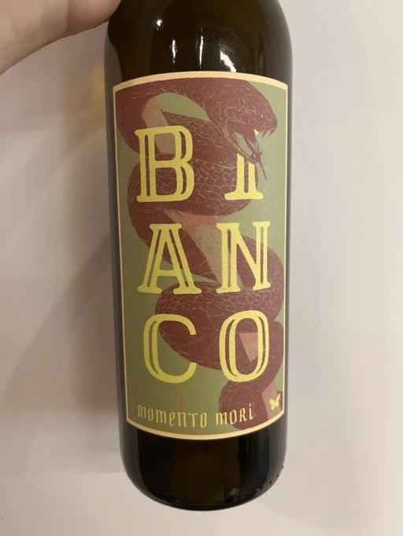
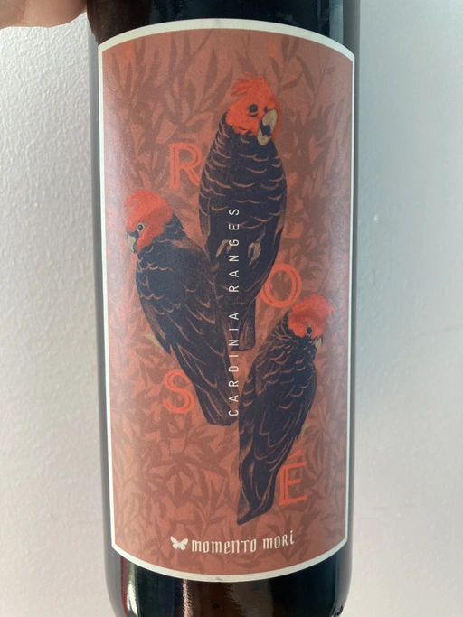
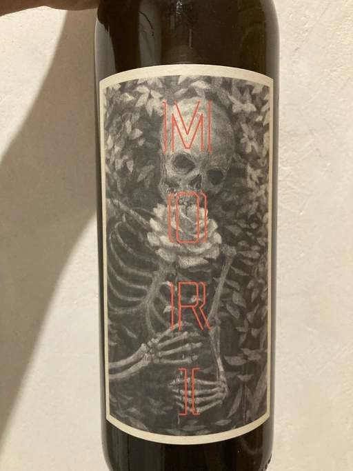
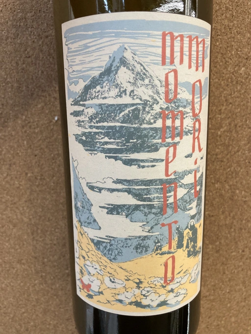
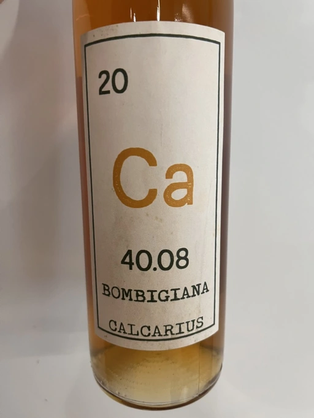

- Type
- White Still, Dry
- Producer
- Momento Mori
- Vintage
- 2019
- Location
- Australia, Gippsland
- Grapes
- Fiano, Greco di Tufo, Chardonnay
- Alcohol
- 11.5
- Sugar
- 0.1
- Price
- 1137 UAH
- Cellar
- N/A
2019 is different from 2018, both for the composition of the blend and for a shorter maceration duration.
Ratings
2022-08-18 - 8.00
Less skin contact than in the previous vintage. Is it good? Is it bad? It’s a matter of perspective and expectations. In my opinion, it’s a lovely blend with good volume. VA, acacia blossoms, kimchi, honey, dill and IPA (at least what I imagine by IPA, I rarely drink it). Fresh, multilayered and just delicious.
Related

Momento Mori
Cardinia Rangers Rosé - 2019

Momento Mori
Fistful of Flowers - 2020

Momento Mori
The Incline - 2018

Momento Mori
Give up the Ghost - 2019

Momento Mori
Bianco - 2018

Momento Mori
Give up the Ghost - 2018

Momento Mori
Staring at the Sun - 2019

Bencze
Riesling - 2019

Valentina Passalacqua
Calcarius Bombigiana - 2019